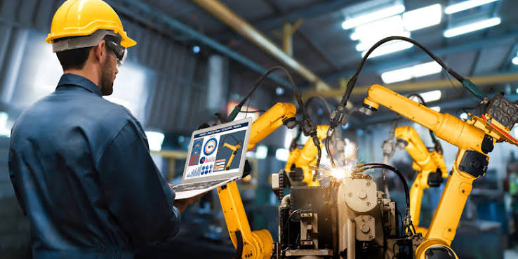
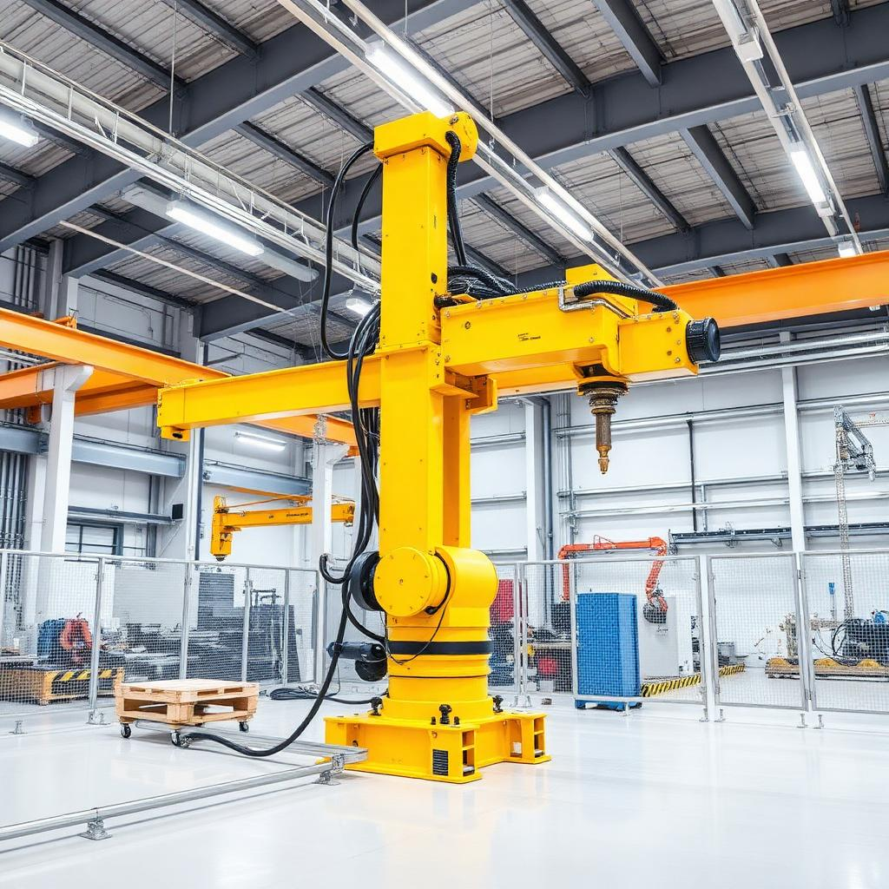
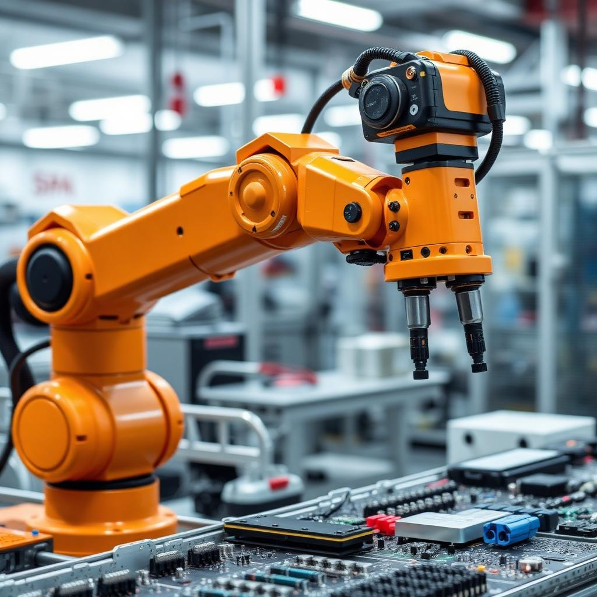
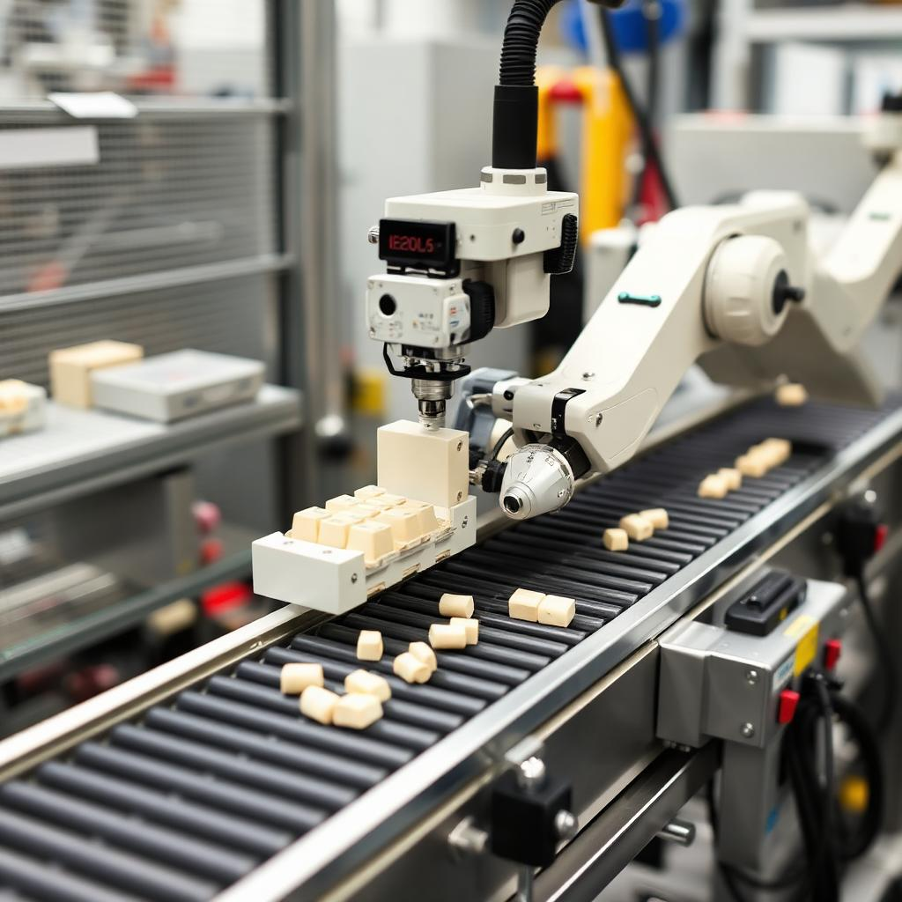
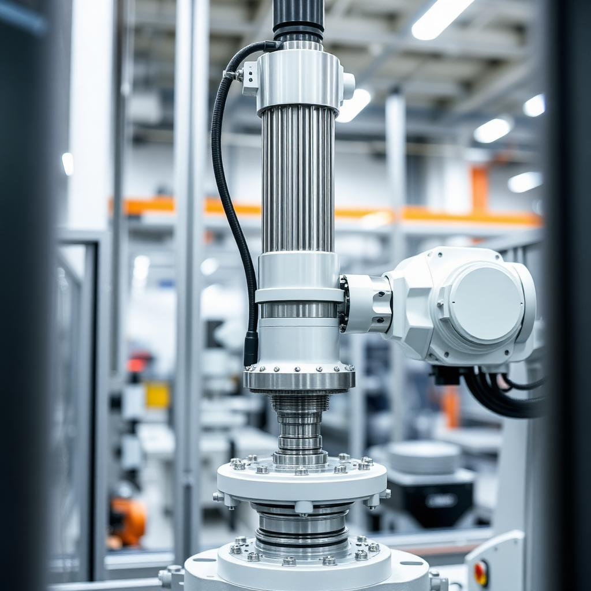
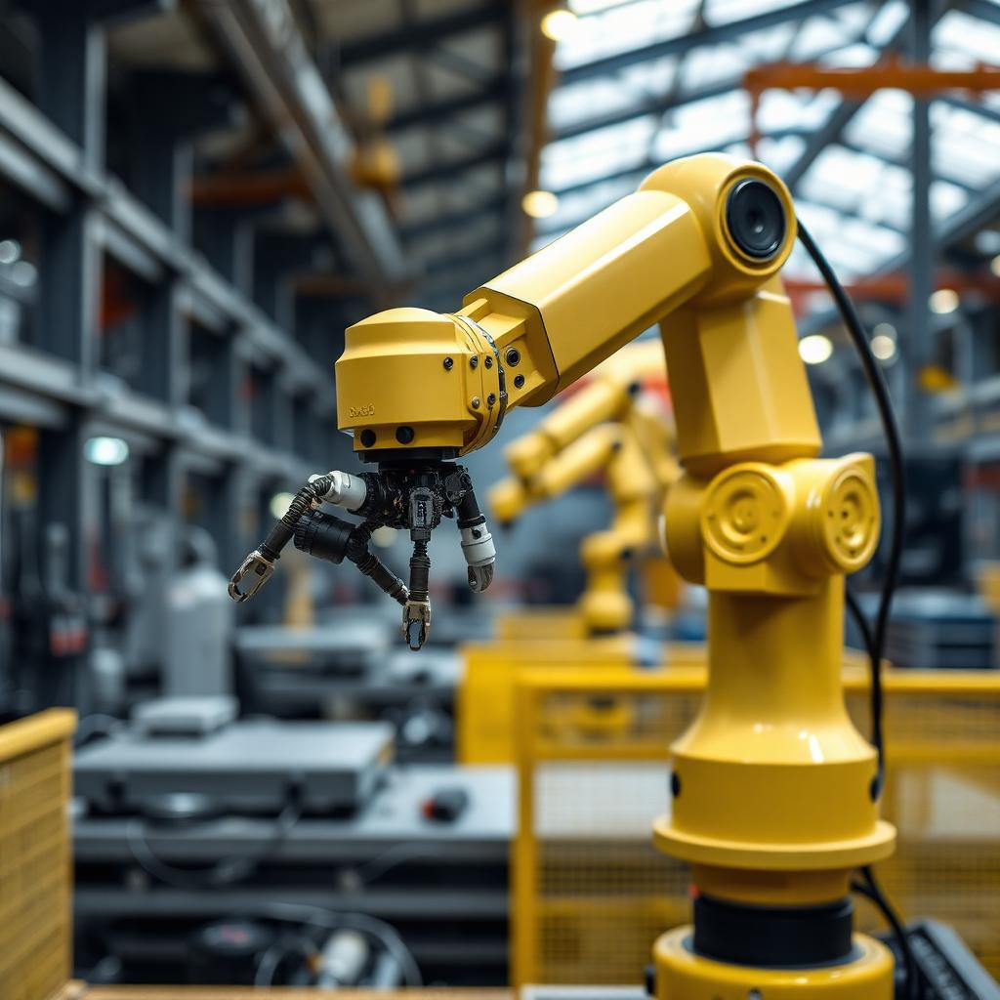
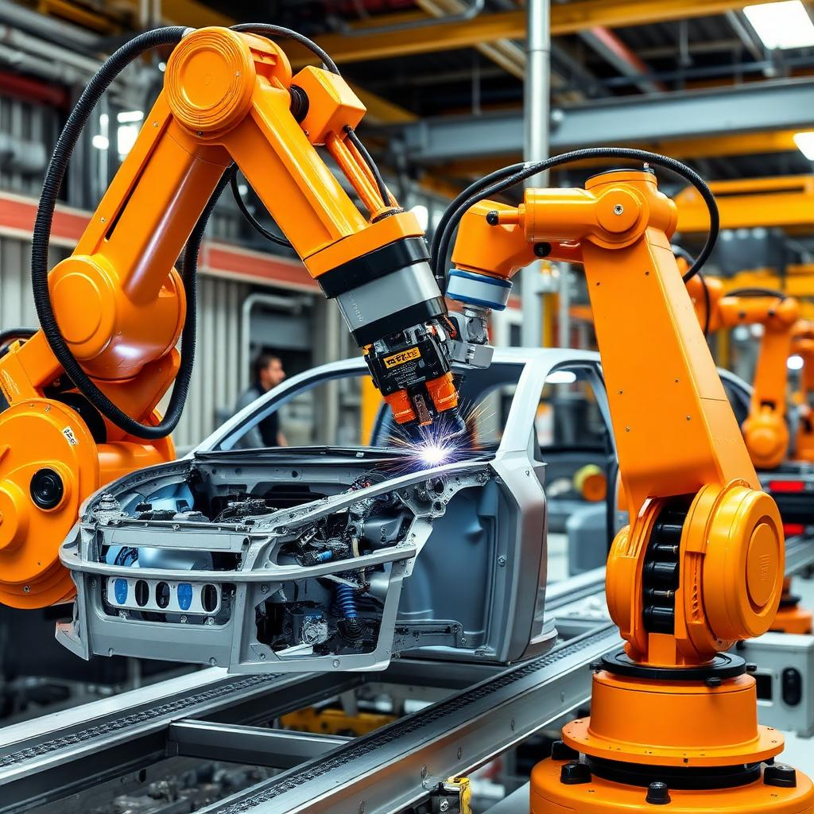
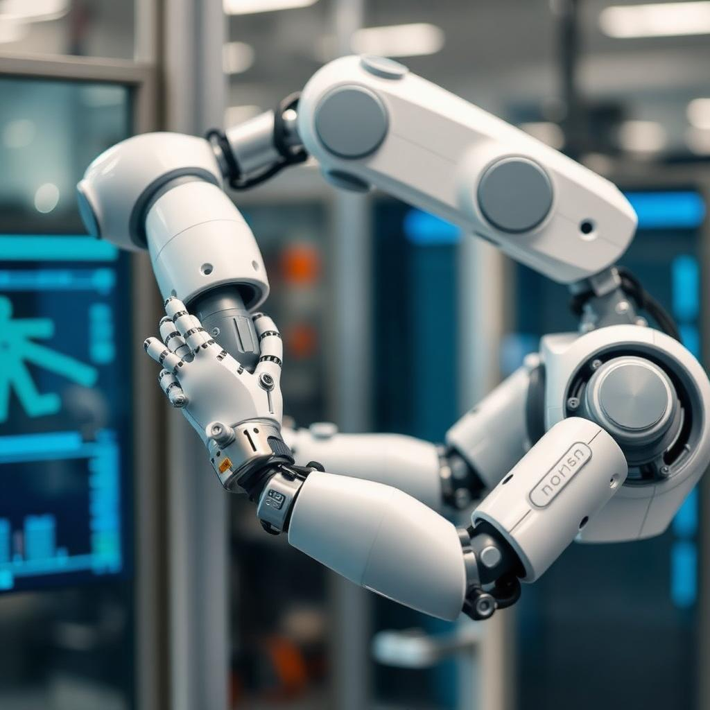

Internet das Coisas (IoT)
Rede de sensores, atuadores e dispositivos conectados que trocam dados em tempo real via protocolos como MQTT e OPC UA, formando a espinha dorsal informacional da fábrica.
Catálogo técnico completo das sete morfologias robóticas — do braço cartesiano ao cobot colaborativo — com cinemática, aplicações, fabricantes de referência e integração com CLPs, SCADA, MES e ERP.

Rede de sensores, atuadores e dispositivos conectados que trocam dados em tempo real via protocolos como MQTT e OPC UA, formando a espinha dorsal informacional da fábrica.
Manipuladores programáveis com cinemática direta e inversa (Denavit-Hartenberg), capazes de operar com repetibilidade submilimétrica e integrar-se a células produtivas complexas.
Combinação de CLPs, servos, sensores e supervisórios que executa processos com mínima intervenção humana, otimizando custo, qualidade e segurança.
Robôs conectados publicam torque, velocidade e status em nuvem, permitindo manutenção preditiva, digital twins e adaptação dinâmica ao pedido do ERP.






